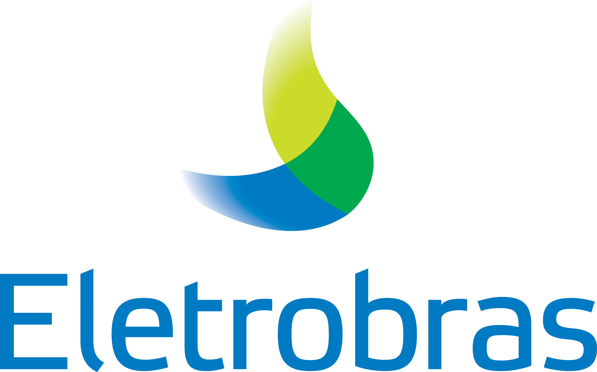
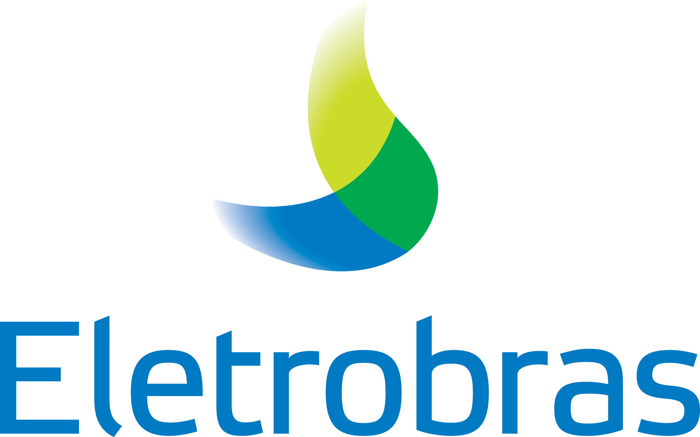
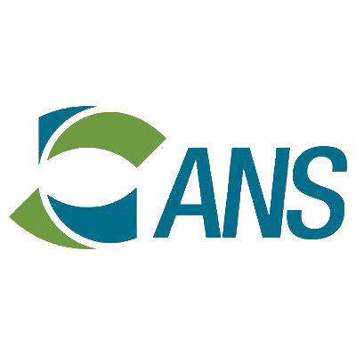
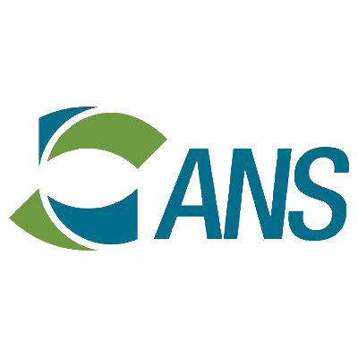
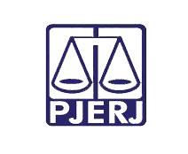
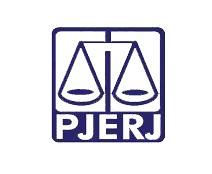

Tribunal de Justiça do Estado do Rio de Janeiro
↓
Prestação de Serviços, com cessão de mão de obra, de planejamento e monitoramento do fluxo
logístico
de suprimentos e bens patrimoniais.
- Locação no cliente com a seguinte equipe:
- 144 assistentes de compras;
- 106 auxiliares de almoxarifados;
- 4 operadores de empilhadeiras.
- Viagem por todo o estado do Rio de Janeiro;
- Atendimento em horário diferenciado.
- Total de profissionais alocados: 254

UFRRJ - Universidade Federal Rural do Estado do Rio de Janeiro
Campus Nova Iguaçu
↓
Prestação de serviços, com cessão de mão de obra, de apoio administrativo e operacional com
cessão de mão de obra.
- Locação no cliente com a seguinte equipe:
- 1 auxiliar de almoxarife;
- 6 auxiliares de escritório;
- 1 auxiliar de jardinagem;
- 2 auxiliares de manutenção predial;
- 2 carregadores;
- 2 operadores de roçadeira;
- 4 recepcionistas.
- Total de profissionais alocados: 18
UFRRJ - Universidade Federal Rural do Estado do Rio de Janeiro
Campus Seropédica
↓
Prestação de serviços, com cessão de mão de obra, de apoio administrativo e operacional com
cessão de mão de obra.
- Locação no cliente com a seguinte equipe:
- 5 almoxarifes;
- 55 assistentes de logística;
- 2 auxiliares de almoxarifado;
- 8 compradores.
- Total de profissionais alocados: 70
Johnson Controls BE do Brasil
↓
Prestação de serviços, com cessão de mão de obra, de mensageria motorizada e não motorizada,
operação de central de cópias, administração de malotes, abastecimento de equipamentos de
impressão e arrumação de salas de reunião.
- Equipe alocada nas instalações da HP – Hewllet Packard:
- HP – Barueri: 12 auxiliares administrativos;
- HP – Campinas: 7 auxiliares administrativos;
- HP – São Paulo: 3 auxiliares administrativos.
- Desenvolvimento de uma solução específica para gerenciamento de toda a operação:
Recebimento de correspondência, distribuição de interna de documentos e correspondência,
administração de malotes, abastecimento de equipamentos de impressão e arrumação de sala de
reunião.
- Total de profissionais alocados: 22

Nuclebrás Equipamentos Pesados S.A.
↓
Prestação de serviços, com cessão de mão de obra, de protocolo, distribuição de documentos,
portaria, operação de máquinas reprográficas, serviços gráficos e eventuais de telefonia.
- Locação no cliente com a seguinte equipe:
- 3 contínuos;
- 1 supervisor;
- 4 auxiliares de escritório;
- 2 porteiros;
- 1 gráfico.
- Total de profissionais alocados: 11
Casa da Moeda do Brasil
↓
Prestação de serviços de mensageria, com cessão de mão de obra e não motorizada, para
execução de distribuição interna de documentos e entregas de processos e encomendas.
- Locação no cliente com a seguinte equipe:
- 1 supervisor;
- 3 mensageiros.
- Disponibilização de equipamentos de informática para o desenvolvimento das atividades;
- Disponibilização de carro elétrico para deslocamento no parque fabril;
- Desenvolvimento de uma solução específica para gerenciar a distribuição interna de
documentos e entrega de processos e encomendas;
- Elaboração de relatórios mensais demonstrando o fluxo diário de documentação.
- Total de profissionais alocados: 4
Universidade Federal do Estado do Rio de Janeiro
↓
Prestação de serviços, com cessão de mão de obra, de copeiragem hospitalar e administrativa
em diversas unidades da universidade.
- Locação no cliente com a seguinte equipe:
- 75 copeiras hospitalar;
- 39 copeiras administrativas.
- Unidades atendidas:
- Ilha do Fundão;
- Centro do Rio de Janeiro;
- Laranjeiras;
- Botafogo;
- Lagoa.
- Total de profissionais alocados: 114
Universidade Federal do ABC
↓
Prestação de serviços, com cessão de mão de obra, de recepção.
- Locação no cliente com a seguinte equipe:
- 7 recepcionistas;
- 1 encarregado.
- Total de profissionais alocados: 8
Departamento Nacional de Infraestrutura e Transporte – SP
↓
Prestação de serviços, com cessão de mão de obra, de suporte técnico operacional.
- Locação no cliente com a seguinte equipe:
- 6 auxiliares administrativo;
- 2 recepcionistas/telefonistas;
- 2 copeiras;
- 1 operador de máquina copiadora;
- 1 auxiliar de serviços gerais.
- Total de profissionais alocados: 12
Centro de Pesquisa de Energia Elétrica
↓
Prestação de serviços, com cessão de mão de obra, de secretariado executivo.
- Locação no cliente com a seguinte equipe:
- 1 secretária executiva sênior;
- 2 secretárias executiva pleno;
- 5 secretárias executiva júnior.
- Total de profissionais alocados: 8
Secretaria de Infraestrutura e Obras do Rio de Janeiro
↓
Prestação de serviços, com cessão de mão de obra, de apoio de atividades administrativas,
técnicas e operacionais.
- Locação no cliente com a seguinte equipe:
- 4 bombeiros civil;
- 2 encarregados de controle vertical;
- 10 ascensoristas;
- 1 operador de áudio;
- 5 porteiros;
- 2 encarregados de recepção;
- 8 recepcionistas;
- 4 auxiliares administrativo;
- 2 copeiras.
- Total de profissionais alocados: 38
Empresa de Obras Públicas do Estado do Rio de Janeiro
↓
Prestação de serviços, com cessão de mão de obra, de cozinha, copeiragem e recepção.
- Locação no cliente com a seguinte equipe:
- 4 auxiliares de copa;
- 3 recepcionistas;
- 1 garçom.
- Total de profissionais alocados: 8
Prestação de serviços de auxiliar de serviço operacional de áudio com cessão de mão de obra.
- Locação no cliente com a seguinte equipe:
- 2 auxiliares de serviço operacional de áudio e vídeo.
- Total de recursos alocados: 2
 A Empresa
A Empresa Outsourcing específicos (selective) até o total (full) em infraestrutura e suporte.
↓
Outsourcing específicos (selective) até o total (full) em infraestrutura e suporte.
↓
 Projetos ↓
Projetos ↓
 Outsourcing seletivo (Terceirização) - Apoio Administrativo ↓
Outsourcing seletivo (Terceirização) - Apoio Administrativo ↓
 Alocação de pessoal
↓
Alocação de pessoal
↓
 Processos ↓
Processos ↓
 Home Office ↓
Home Office ↓
 


 

 
